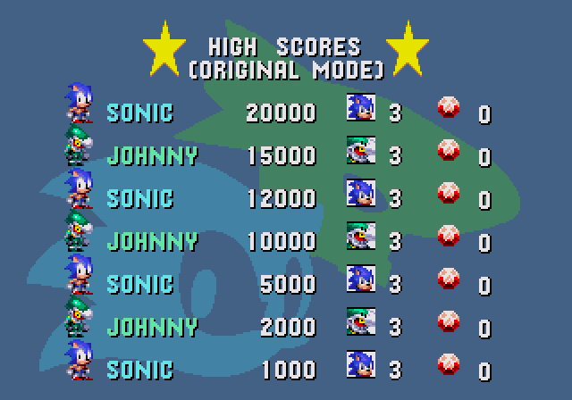

Title screen
Sonic Sundown is an advanced "whole game overhaul" type hack of Sonic 2 SMS themed around travelling across different planets.
Tails in Lunar Outpost Zone
I arranged and programmed in the music for Lunar Outpost Zone, which is a cover of the jazz song "Fly Me To The Moon," written by Bart Howard and famously sung by Frank Sinatra. This choice of song was inspired by the anime Neon Genesis Evangelion, which uses variations of this song as its ending theme. These are the versions I used as a reference for my arrangement. Lunar Outpost Zone isn't fully implemented currently, so the song is being used as a placeholder for the title screen music.
Downloads
CGS2024 Early Teaser (Nov 2024)
SHC2024 Early Teaser (Aug 2024)
Related Pages
Soundtrack
Chao Games Showcase 24 Booth
SHC2024 Release Page
Sonic Retro Development Thread
Red Miso Studios Website
Title screen
This is a hack of Sonic 3 & Knuckles that is a cross-over between Castlevania, Ghosts 'n Goblins and Sonic game series, focused on boss fights (but not forgetting fast-paced platforming either!) and providing a unique story and aesthetic not seen in other hacks of the Sonic games.
Malicious Glance Act 2 midboss
I designed and programmed the midboss for Malicious Glance Act 2. It's a segmented worm that burrows into the walls and targets Sonic. Its weak point is on the end of its tail. In addition, I programmed a couple cutscenes.
Downloads
v1.1 (Final Release)
SHC 2023 Release
SHC 2021 Demo
SHC 2019 Demo
SHC 2018 Demo
Related Pages
SSRG Thread (Final Release)
Sonic Retro Thread (Final Release)
SSRG Thread (SHC 2021 Demo)
Sonic Retro Thread (SHC 2019 Demo)
Red Miso Studios Website
Title screen
Sonic & Johnny is a heavy modification of Sonic the Hedgehog by Lone Devil where the goal is to race against your rival while fighting new bosses along the way. This hack features Johnny from Sonic Rush Adventure and new zones, which contain plenty of familiarity.
Leaderboard screen
I programmed the leaderboard screen for this hack. There's not much more to say about it.
Downloads
Post-SHC2022 Update [1.03] (Nov 2022)
SHC2022 [v1.0] (Aug 2022)
Related Pages
Sonic Retro Wiki Page
Sonic Retro Discussion Thread
SHC2022 Release Page
The most recent public progress showcase, which was before I began working on it
I remixed several songs for the soundtrack. This ROM hack hasn't been released yet.
Related Pages
Soundtrack
Mountainside Zone with Richter
This is my first hack, dating back to 2014 before I scrapped it in favor of Sonic Next Genesis. I worked on it for about 2 months, and in that time I created level designs for Mountainside Zone Act 1 and Summit Ruins Acts 1 and 2, converted a bunch of MIDIs, and made some basic programming changes. Pressing B on the title screen allows you to play as Richter Belmont from Castlevania: Rondo of Blood.
Downloads
SSRG Demo
Related Pages
SSRG Release Thread